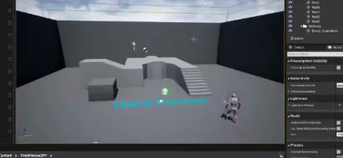
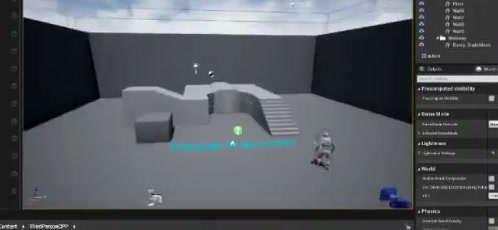
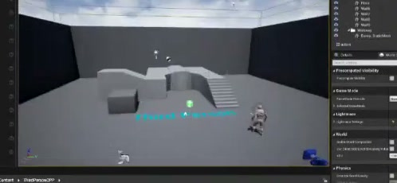

Experience
A third-person RPG with a choice between a mage and a warrior, two different combat styles, roaming enemies, and collectible loot.

Description
A character-selection screen introduces the two playable roles. The mage uses ranged spells and projectiles, while the warrior attacks with a sword. Each has separate models and animations, so the choice changes both the appearance of the character and the way an encounter is approached.
Enemies move through the world and pursue the player when the character enters their view. Defeated enemies can drop loot, which can be picked up alongside coins. A HUD and an initial quest interaction connect combat to the surrounding role-playing interface.

Detailed features
Character selection and animation
Mage and warrior are separate playable options with their own models and animation sets. Character selection is part of the game flow rather than a cosmetic label in the overview.

Ranged and melee combat
The mage casts projectiles at a distance. The warrior closes the gap to deal sword damage. The two implementations demonstrate different relationships between range, movement, animation, and hit resolution.
Enemy pursuit, loot and progression
Enemies can notice and move toward the player. Loot drops, item pickup, coin collection, the HUD, and a quest-start interaction provide systems around the combat loop.
Build summary
The project is an Unreal Engine third-person RPG implemented with Blueprints. Its documented scope includes character selection, character-specific animation, spell projectiles, sword damage, enemy pursuit, loot and coin pickup, a HUD, and the beginning of a quest system.
- Technology
- Unreal Engine
- Scope
- Unreal project
- Presentation
- 1080p footage unavailable
Feature video
1080p project video unavailable
A verified recording of this project at the requested resolution has not been published.